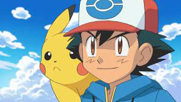
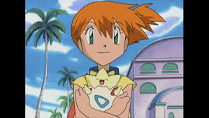
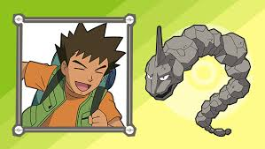
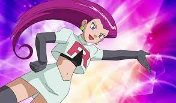
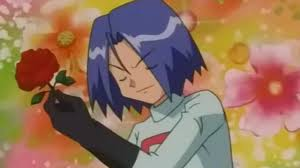
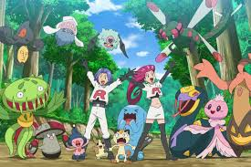

Description: Sacha est le
héros de
la série ; ce
garçon
qui a commencé son aventure à l'âge de dix ans espère devenir le meilleur
dresseur
de Pokémon au monde en traversant le monde Pokémon.

Description: Ondine est
une
dresseuse Pokémon de la
série Pokémon, tout comme Sacha. Elle apparaît et rencontre le
héros principal au premier épisode de la série, elle repêche Sacha d'une rivière à
Bourg-Palette.

Description: Pierre est un
personnage
doté d'un caractère
très particulier. En effet, à chaque fois qu'il croise une jolie
fille, il en tombe follement amoureux et se jette sur elle, afin de lui déclarer sa flamme.

Description: Jessie fait partie
du
trio de la Team
Rocket qui passe son temps à poursuivre Sacha pour lui créer des
problèmes. Dotée d'un fort caractère à la différence de
ses
deux partenaires.

James est un des
trois membres
de
la
Team Rocket avec Jessie et Miaouss, qui poursuivent Sacha et ses
amis dans le but de voler Pikachu pour leur mettent des bâtons dans les roues
chaque fois que l'occasion se présente.

La première apparition du trio
eut
lieu
dans le deuxième épisode première saison : Ils sont battus par Sacha et Pikachu, alors qu'ils tentaient
de voler les
pensionnaires du Centre Pokémon.